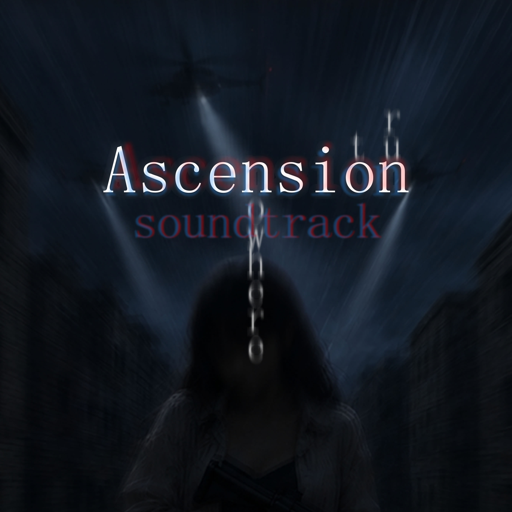

Ascension
status: WIP
Years apart from past events. Just when you thought you got your freedom, an unexpected event occurs.
You have been framed, and wanted all around the state. Nowhere to go, nowhere to hide. Should you trust anyone? You have one night to fix your life.
Ascend into the clarity as you fight through the dark streets and alleys of the east. A dark atmospheric FPS action story on enhanced vanilla GoldSrc engine.
(Defectus 2017-2026)
View Itch.io
Download soundtrack from music page or Bandcamp
